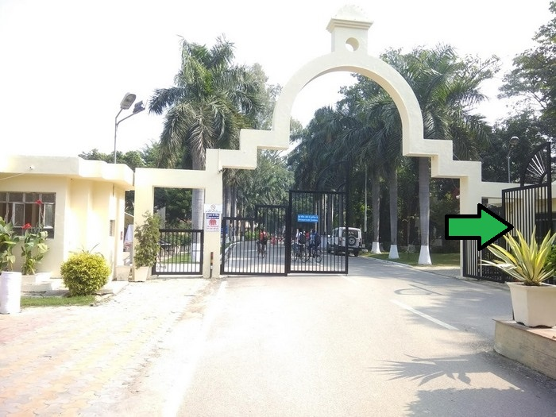

|

|
About
James Thomason (born 3 May 1804, Great Shelford, near Cambridge, Cambridgeshire, England and died 27 September 1853, Bareilly, India) was a British colonial governor. He was British Lieutenant-Governor of the North-Western Provinces in India and founder of a system of village schools.
The son of a British clergyman stationed in Bengal, Thomason was educated in England, but he returned to India in 1822. He held numerous positions there, including magistrate-collector and settlement officer in Azamgarh (1832–37) and foreign secretary to the government of India (1842–43). In 1843 he was named Lieutenant-Governor of the North-Western Provinces, a post he held for ten years. By 1853 he had also established a system of 897 locally supported elementary schools in centrally located villages that provided a vernacular education for children throughout the region. He was appointed as governor of Madras by Queen Victoria, but did not survive to assume the post.
Thomason proposed that a civil engineering college be established at Roorkee. The college, now the Indian Institute of Technology Roorkee, was founded in 1847. It gained university status in 1949[2] and was declared an institute of national importance in 2001 by then HRD minister Mr. Murli Manohar Joshi. The main building was renamed to James Thomason Building in his honor by an act of the Board of Governors of the institute in December 2013, and a road on campus also bears his name.
So this is gate number 1.
|